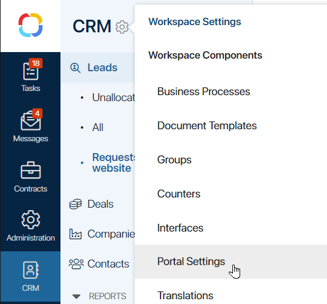
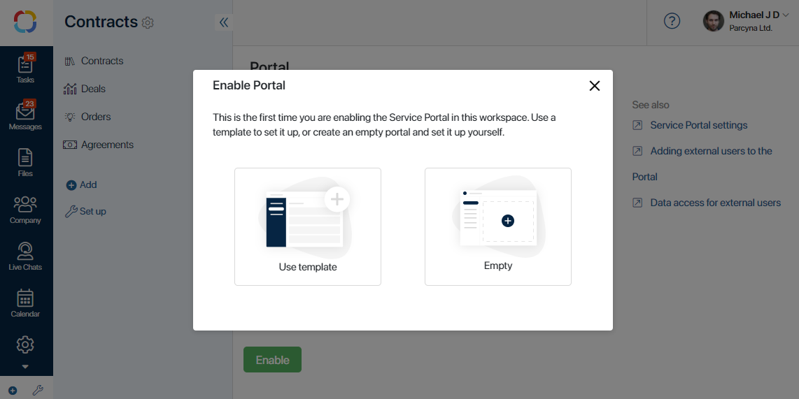
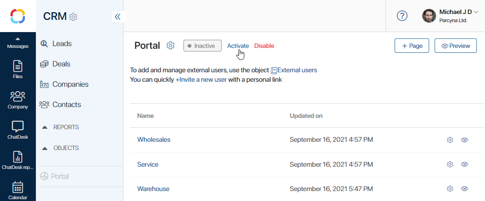

With BRIX you can collaborate seamlessly not only with coworkers but with partners and clients as well. Use the External Portal feature to create a shared information space for interaction with customers, and include partners and clients into your business processes.
The External Portal is one or several isolated pages in the BRIX system the external users can access. You can fill the pages with necessary data from BRIX, place input forms, widgets, and buttons for launching business processes. The portal can be accessed by using the link.
To interact with the portal, external users can use a browser, as well as a desktop and mobile application. For more information on how to provide access to the portal via applications, see the External portal in an app article.
For example, on a portal page, you can collect and track customer’s requests, organize customer support, or run reclamation processes.
To make the portal available to external users, you need to purchase and activate a package of named licenses. To do that, contact your sales rep.
Getting started
You can configure a portal for each of your workspaces. For example, one portal can be used to process ServiceDesk requests, and another to collaborate with your company's partners.
Please note that if BRIX is installed in your internal network that cannot be reached without VPN, the access to the portal will also be limited.
начало внимание
Only users included in the Administrators group can enable and activate the Service Portal, and configure its pages.
конец внимание
- Click the gear icon next to the workspace name and select Portal Settings.

- On the page that opens, click Enable.
- You’ll see the Enable Portal window, where you can select one of two ways of portal configuration. Either use a template to set it up, or create an empty portal and set it up from scratch.

After that, a new Portal item will appear in the workspace menu.
- To activate the portal, click the Activate button. It makes the portal accessible to external users.

When the portal is deactivated, you can customize pages or add users. However, invited users will not be able to view pages until the portal is activated.
You can also disable the portal if necessary. It will no longer appear in the app list. If you re-enable the portal later, all pages previously created in the portal will be saved.